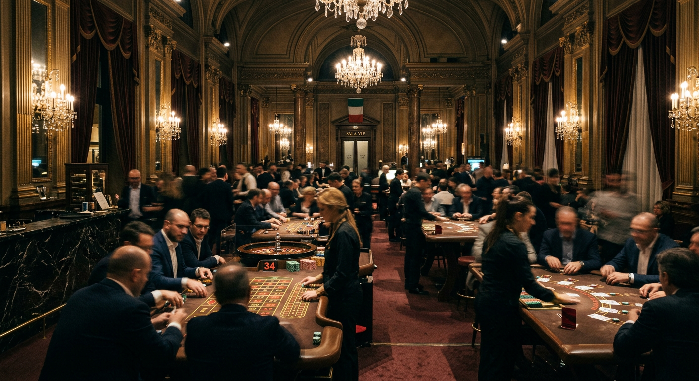
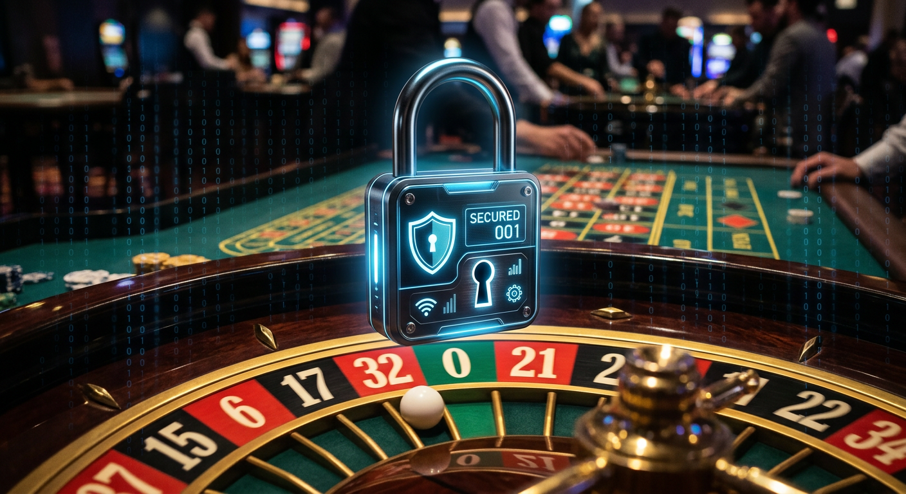
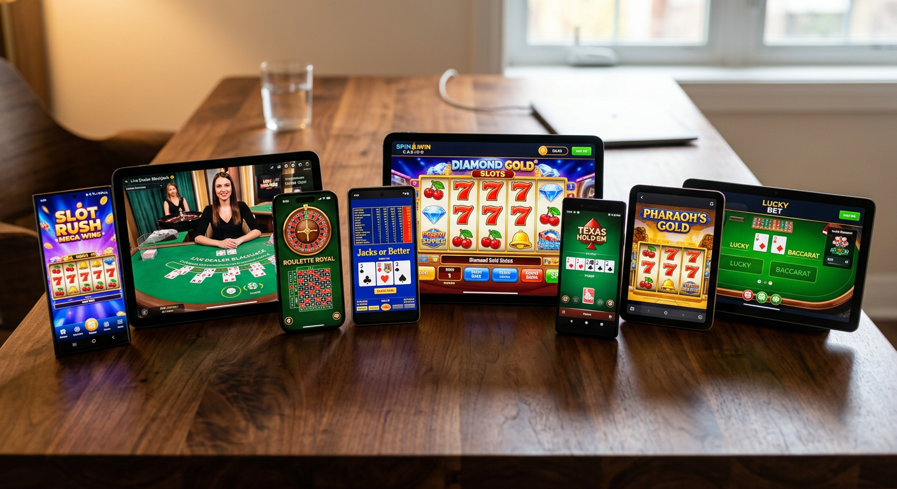
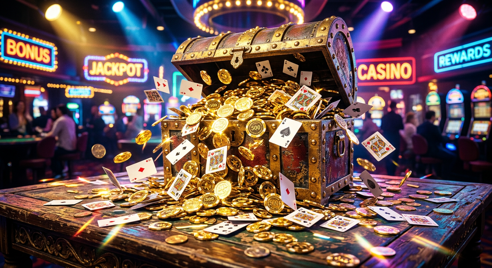
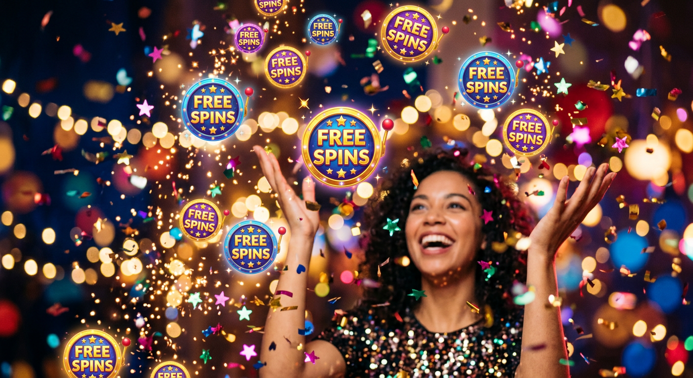

Casino senza documenti: Guida ai migliori siti No-KYC del 2026
Il panorama del gioco d'azzardo digitale ha subito una trasformazione radicale negli ultimi anni. Una delle tendenze più rilevanti per il pubblico italiano è la crescita esponenziale dei casino senza documenti. Queste piattaforme permettono agli utenti di accedere ai propri giochi preferiti senza dover affrontare lunghe e tediose procedure burocratiche per la verifica dell'identità.
In questa guida completa, esploreremo come funzionano questi portali, quali sono i vantaggi reali per i giocatori e come orientarsi tra le diverse licenze internazionali. Analizzeremo inoltre le tecnologie che rendono possibile il gioco immediato, garantendo al contempo un elevato standard di sicurezza e protezione dei dati personali.
Scegliere un casino senza documenti non significa rinunciare alla legalità, ma piuttosto abbracciare un modello di intrattenimento più snello e moderno. Vedremo insieme quali sono i brand più affidabili e come sfruttare al meglio i bonus di benvenuto disponibili oggi sul mercato.
Cosa si intende per gioco d'azzardo senza verifica dell'identità?
Il concetto di gioco senza verifica dell'identità si riferisce a piattaforme che non richiedono l'invio di foto di documenti d'identità, passaporti o bollette per confermare l'account al momento della registrazione o del primo prelievo. Tradizionalmente, la procedura conosciuta come Know Your Customer (KYC) è un pilastro dei casinò con licenza ADM.
In un casino senza documenti, l'identificazione avviene in modo silente o automatizzato. Spesso, l'identità del giocatore viene verificata direttamente tramite il metodo di pagamento utilizzato, come avviene con i sistemi Pay N Play di Trustly o attraverso la natura pseudonima della blockchain nel caso delle criptovalute.
Questo approccio riduce drasticamente i tempi di attesa. Invece di attendere giorni per l'approvazione del proprio profilo, i giocatori possono depositare e iniziare a scommettere in pochi secondi, mantenendo un livello di privacy molto più elevato rispetto ai siti tradizionali.
Perché i giocatori italiani cercano i casino senza documenti

La domanda di casino senza documenti in Italia è motivata da diversi fattori, primo fra tutti il desiderio di immediatezza. Nel mondo frenetico di oggi, dover scansionare documenti e attendere l'intervento di un operatore umano per validare un conto gioco è percepito come un ostacolo inutile al divertimento.
Un altro fattore chiave è la diffidenza verso la condivisione di dati sensibili online. Molti utenti preferiscono non caricare copie dei propri documenti su server centralizzati, temendo possibili violazioni della sicurezza o utilizzi impropri delle informazioni personali da parte di terzi.
Privacy e protezione dei dati personali
La privacy è diventata una merce rara nel web contemporaneo. Optare per un casino senza documenti permette di mantenere le proprie abitudini di gioco riservate. Non essendoci un collegamento diretto e visibile tra il proprio nome civile e l'attività sulla piattaforma in fase di registrazione, il rischio di furto d'identità diminuisce sensibilmente.
Le piattaforme No-KYC moderne utilizzano protocolli di crittografia avanzati per proteggere le transazioni finanziarie. L'assenza di un archivio centralizzato di documenti d'identità rende questi siti bersagli meno appetibili per gli hacker che mirano alla sottrazione di dati personali sensibili.
Velocità di accesso e prelievi immediati
La velocità è forse il vantaggio più tangibile. Nei casinò tradizionali, la fase di prelievo è spesso rallentata da controlli manuali. In un casino senza documenti, i prelievi tendono ad essere processati quasi istantaneamente, specialmente se si utilizzano portafogli elettronici o Bitcoin.
Questa efficienza operativa migliora notevolmente la esperienza di gioco complessiva. Sapere di poter incassare le proprie vincite nel giro di pochi minuti, senza dover inviare ulteriori prove di residenza o selfie con il documento in mano, crea un rapporto di fiducia basato sulla trasparenza e sulla rapidità.
La sicurezza nei casino senza documenti: È legale?

Una domanda comune riguarda la legalità di tali siti. È importante chiarire che operare un casino senza documenti non è intrinsecamente illegale a livello internazionale. Molte di queste piattaforme possiedono licenze regolamentari rilasciate da autorità rispettate al di fuori del territorio italiano.
Mentre l'Agenzia delle Dogane e dei Monopoli (ADM) impone regole rigide sulla verifica dell'identità per le sue licenze, altri enti permettono modelli operativi differenti. Giocare su questi siti è una scelta del singolo utente, il quale deve però assicurarsi che la piattaforma scelta operi con criteri di onestà e correttezza comprovati.
Differenze tra licenze ADM e licenze internazionali
Le licenze ADM (ex AAMS) garantiscono una tutela legale diretta da parte dello Stato italiano, ma impongono procedure burocratiche pesanti. Al contrario, licenze come quelle della Malta Gaming Authority (MGA) o della Curaçao eGaming offrono un equilibrio tra protezione del consumatore e flessibilità operativa.
Molti casino senza documenti scelgono la licenza di Curaçao proprio per la possibilità di integrare pagamenti in criptovalute, che per loro natura facilitano l'anonimato. La UK Gambling Commission, pur essendo molto severa, ha esplorato in passato modelli simili, sebbene attualmente stia restringendo i criteri per il mercato britannico.
Come riconoscere una piattaforma affidabile
Per identificare un casino senza documenti sicuro, bisogna guardare oltre l'assenza di KYC. È fondamentale controllare la presenza di una licenza valida in fondo alla homepage e leggere le recensioni degli utenti. Piattaforme storiche come Wildtokyo Casinò o Astromania Casinò hanno costruito la loro reputazione sulla puntualità dei pagamenti.
Un altro indicatore di affidabilità è la qualità dei fornitori di software. Se il sito ospita titoli di NetEnt, Microgaming o Evolution Gaming, è probabile che sia sottoposto a controlli rigorosi sull'equità dei generatori di numeri casuali (RNG), garantendo sessioni di gioco oneste e non manipolate.
Tipologie di piattaforme per giocare subito

Non tutti i casino senza documenti funzionano allo stesso modo. Esistono principalmente due modelli dominanti che permettono di saltare la fase di verifica classica: i casinò Pay N Play e i casinò basati esclusivamente su criptovalute. Entrambi mirano a eliminare le frizioni durante l'onboarding dell'utente.
Il mercato offre anche soluzioni ibride, dove è possibile registrarsi in modo veloce ma vengono richiesti documenti solo al superamento di certe soglie di prelievo elevate. Tuttavia, i veri appassionati di privacy puntano quasi sempre verso soluzioni integralmente No-KYC.
Pay N Play: Il modello Trustly
Il sistema Pay N Play, sviluppato dal colosso svedese Trustly, ha rivoluzionato il settore. In questo modello, non esiste un modulo di registrazione. Il giocatore effettua semplicemente un deposito tramite il proprio conto bancario online. Trustly trasmette al casinò le informazioni necessarie per l'identificazione in background, in modo sicuro e verificato dalla banca stessa.
Questo permette di definire il sito come un vero casino senza documenti dal punto di vista dell'utente finale, poiché non deve caricare nulla. È una soluzione molto popolare nel Nord Europa e sta guadagnando terreno anche tra i giocatori italiani più informati tecnologica.
Crypto Casino e l'anonimato della Blockchain
I casinò che utilizzano Bitcoin e altre criptovalute rappresentano l'avanguardia dell'anonimato. Qui, l'account è spesso legato solo a un indirizzo email o, in alcuni casi, solo all'indirizzo del wallet del giocatore. Le transazioni sulla blockchain non richiedono l'approvazione di intermediari finanziari tradizionali, eliminando la necessità di controlli documentali.
Utilizzare le criptovalute nei casino senza documenti garantisce non solo privacy, ma anche commissioni ridotte e limiti di deposito e prelievo molto più elastici. È l'opzione preferita da chi desidera gestire il proprio bankroll senza il controllo costante degli istituti bancari classici.
Bonus disponibili nei casino senza documenti

Contrariamente a quanto si potrebbe pensare, le promozioni non mancano affatto in queste realtà. Anzi, per attirare utenti in un mercato competitivo, ogni casino senza documenti offre pacchetti di benvenuto estremamente generosi. Questi possono includere bonus sul primo deposito, cashback settimanali o l'innovativa funzione Bonus Crab, molto amata dai giocatori moderni.
È essenziale leggere sempre i termini e le condizioni, poiché i requisiti di scommessa (wagering) possono variare. Tuttavia, la rapidità nel ricevere il bonus appena effettuato il deposito è un punto di forza indiscutibile di queste piattaforme agili.
Bonus di benvenuto senza deposito
Alcuni siti offrono piccoli incentivi gratuiti solo per la creazione di un account rapido. Sebbene meno comuni nei casino senza documenti puramente crypto, sono ancora presenti in piattaforme ibride. Questo permette di testare la velocità della piattaforma e la fluidità dei giochi senza rischiare il proprio capitale iniziale.
Un esempio di eccellenza in questo ambito è rappresentato da Millioner, che spesso propone promozioni mirate per chi preferisce un accesso veloce. Ricordate però che i bonus senza deposito hanno solitamente tetti massimi di vincita prelevabile piuttosto contenuti.
Giri gratuiti e promozioni ricorrenti
I giri gratuiti (o free spins) sono la colonna portante delle promozioni per le slot machine. In un casino senza documenti, è frequente ricevere giri gratis ogni settimana o come parte di un programma fedeltà. Portali come Roulettino puntano molto sull'engagement continuo dei propri iscritti tramite queste offerte.
Anche Wyns si distingue per un calendario promozionale fitto, che premia la costanza dei giocatori senza mai appesantire l'esperienza con richieste di invio di documentazione cartacea o digitale.
Giri Gratis senza documenti

La ricerca di "giri gratis senza documenti" è una delle più frequenti tra i cacciatori di bonus. Molti giocatori desiderano provare le ultime slot machine lanciate dai provider più famosi senza dover fornire dati sensibili. Questi bonus vengono accreditati istantaneamente e permettono di vivere un esperienza di gioco reale fin dal primo minuto.
In un casino senza documenti, i giri gratuiti sono spesso legati a determinati giochi in promozione. Ad esempio, potreste trovare 50 giri gratuiti su una nuova slot di Pragmatic Play semplicemente collegando il vostro wallet. Questa semplicità è ciò che rende tali piattaforme superiori per chi odia la burocrazia.
Piattaforme come Diva Spin Casinò e Lunubet Casinò sono note per la generosità dei loro pacchetti di free spins. Assicuratevi di controllare se i giri hanno una scadenza temporale, poiché spesso vanno utilizzati entro 24 o 48 ore dall'attivazione per non perderne il beneficio.
"No documents" = no KYC?
Molti utenti si chiedono se l'espressione "no documents" equivalga effettivamente alla totale assenza di KYC. La risposta è: dipende dalla piattaforma. Nella maggior parte dei casi, un casino senza documenti sposta la responsabilità della verifica sul fornitore di servizi di pagamento (come la banca o l'exchange di criptovalute), rispettando comunque le normative anti-riciclaggio internazionali.
Tuttavia, esistono siti chiamati "Pure No-KYC" che non richiedono assolutamente nulla, nemmeno in fase di prelievo di grandi somme. È qui che risiede la vera libertà per l'utente, ma è anche dove è necessaria la massima prudenza nella scelta del brand. È fondamentale appoggiarsi a siti recensiti positivamente come Spinempire Casinò o Boomerangbet Casino.
In definitiva, il termine indica che il giocatore non dovrà mai interagire con un ufficio verifiche, rendendo il percorso dal deposito alla riscossione della vincita fluido e privo di interruzioni manuali da parte dello staff del casinò.
I migliori metodi di pagamento per mantenere l'anonimato
Per massimizzare i benefici di un casino senza documenti, la scelta del metodo di pagamento è cruciale. Non tutti gli strumenti finanziari offrono lo stesso livello di privacy. Mentre le carte di credito tradizionali lasciano una traccia evidente nell'estratto conto bancario, altre soluzioni sono state progettate specificamente per la riservatezza.
Le opzioni più moderne integrano tecnologie di crittografia end-to-end e non condividono i dettagli dell'acquirente con il commerciante (in questo caso, il casinò), aggiungendo un ulteriore strato di protezione tra i propri risparmi e l'attività ludica.
Bitcoin e altre criptovalute
Il Bitcoin rimane il re dei pagamenti nei casino senza documenti. Grazie alla sua natura decentralizzata, permette di spostare fondi globalmente in modo quasi anonimo. Oltre a BTC, anche Ethereum, Litecoin e Tether (USDT) sono ampiamente accettati, offrendo transazioni veloci e commissioni spesso trascurabili rispetto ai circuiti bancari standard.
L'uso delle cripto elimina la necessità di collegare il proprio nome a una transazione di gioco d'azzardo, proteggendo la reputazione finanziaria del giocatore di fronte a banche che potrebbero essere prevenute riguardo a tali attività durante la concessione di mutui o prestiti.
E-wallets e voucher prepagati
Se non siete esperti di cripto, i portafogli elettronici come MiFinity o Jeton rappresentano una valida alternativa. Anche l'uso di voucher prepagati come Neosurf o Cashlib permette di caricare il conto in un casino senza documenti acquistando un codice in contanti presso un punto vendita fisico, mantenendo così un anonimato totale sulla provenienza dei fondi.
Piattaforme come Kinbet offrono una vasta gamma di queste opzioni di deposito veloci, garantendo che ogni tipologia di giocatore possa trovare il metodo più consono alle proprie esigenze di riservatezza.
Catalogo giochi: Slot, Tavoli Live e Game Show
Non c'è differenza qualitativa tra l'offerta ludica di un casino senza documenti e quella di un sito tradizionale. Anzi, spesso i siti internazionali hanno cataloghi molto più vasti. Potrete trovare migliaia di slot machine, dalle classiche "Fruit Machine" alle moderne video slot con meccaniche Megaways e grafiche 3D mozzafiato.
I tavoli live sono un altro punto di forza. Grazie a provider come Evolution, è possibile giocare a Blackjack, Roulette o Baccarat con croupier dal vivo in streaming HD. I "Game Show" come Crazy Time o Monopoly Live aggiungono un tocco di spettacolo, trasformando la scommessa in un'esperienza d'intrattenimento televisivo interattivo.
Il sito Dragonia, ad esempio, vanta una sezione di giochi live tra le più complete del settore, permettendo di sedersi ai tavoli virtuali in pochi secondi dopo aver effettuato un deposito rapido e anonimo.
Vantaggi e svantaggi della scelta No-KYC
Analizzare pro e contro è doveroso per ogni giocatore responsabile. Il principale vantaggio di un casino senza documenti è senza dubbio il risparmio di tempo e la tutela della privacy. Inoltre, i limiti di vincita sono spesso più alti e le restrizioni geografiche meno stringenti, permettendo un accesso globale.
D'altro canto, la mancanza di una regolamentazione locale italiana (ADM) significa che in caso di dispute legali, il giocatore non può rivolgersi alle autorità nazionali. È quindi fondamentale affidarsi solo a brand con una solida reputazione internazionale e che operano con onestà da diversi anni, come VegasHero Casinò o Wonderluck Casinò.
| Caratteristica | Casino Tradizionale (ADM) | Casino Senza Documenti |
|---|---|---|
| Registrazione | Lunga, richiede codice fiscale | Istantanea o assente |
| Invio Documenti | Obbligatorio entro 30 giorni | Non richiesto |
| Velocità Prelievo | 2-5 giorni lavorativi | Da istantaneo a pochi minuti |
| Criptovalute | Raramente accettate | Metodo principale |
| Privacy | Bassa (dati centralizzati) | Molto Alta |
888Casino e WinBet: Alternative tradizionali a confronto
Per onestà intellettuale, bisogna menzionare giganti come 888Casino e WinBet. Questi operatori rappresentano il modello opposto al casino senza documenti. Sono pilastri della sicurezza regolamentata in Italia e offrono un ambiente estremamente controllato. Per molti giocatori, la sicurezza di un brand quotato in borsa o con licenza governativa vale il "prezzo" di dover inviare i propri documenti.
Tuttavia, la rigidità di queste piattaforme spinge sempre più utenti verso soluzioni esterne. Chi ha provato la libertà di prelevare istantaneamente su un wallet Bitcoin difficilmente torna indietro alle attese bibliche dei bonifici bancari di certi operatori tradizionali. La scelta dipende quindi dalle priorità personali: sicurezza statale o efficienza tecnologica?
Rischi e Considerazioni di Sicurezza
Nonostante i numerosi vantaggi, giocare in un casino senza documenti comporta dei rischi se non si presta attenzione. Il rischio principale è imbattersi in siti "rogue" (truffaldini) che sfruttano la promessa dell'anonimato per non pagare le vincite. È vitale verificare che il sito utilizzi protocolli HTTPS e che i giochi siano certificati da enti terzi come eCOGRA o iTech Labs.
Un altro aspetto da considerare è il Gioco Responsabile. Senza una verifica dell'identità rigorosa, può essere più difficile per le piattaforme implementare strumenti di auto-esclusione efficaci a livello nazionale. I migliori siti No-KYC offrono comunque strumenti interni per impostare limiti di deposito e sessione, che ogni giocatore dovrebbe utilizzare proattivamente.
Consultate sempre fonti autorevoli come il sito di BeGambleAware per mantenere un approccio sano al gioco d'azzardo, indipendentemente dalla piattaforma scelta.
📌 Consiglio di Luca Moretti, il nostro scrittore esperto:
"Lavoro nel settore dell'iGaming da oltre dieci anni e ho visto l'evoluzione delle procedure di sicurezza. Il mio consiglio per chi approccia un casino senza documenti per la prima volta è di iniziare con piccoli depositi. Testate la velocità del supporto clienti e la reattività dei prelievi con cifre modeste. Una volta verificata l'affidabilità della piattaforma su 'piccola scala', potrete godervi l'anonimato e la velocità con maggiore serenità. Non dimenticate mai che la vostra sicurezza digitale inizia dalla scelta di una password complessa e dall'attivazione, dove possibile, dell'autenticazione a due fattori (2FA)."
Perché molti utenti italiani evitano la verifica dell'identità
Oltre alla privacy, c'è un fattore di comodità psicologica. Molti italiani giocano occasionalmente e vedono le procedure di verifica come un'intrusione ingiustificata per chi vuole solo passare mezz'ora alle slot. L'idea che un'azienda privata conservi scansioni di documenti d'identità validi genera ansia in un'epoca segnata da continui data breach.
Inoltre, la verifica dell'identità può diventare un incubo burocratico se il documento è scaduto o se l'indirizzo sulla bolletta non coincide perfettamente con quello di residenza. Un casino senza documenti elimina queste frizioni, permettendo al giocatore di concentrarsi solo sul divertimento. È una questione di rispetto per il tempo e la libertà dell'utente finale.
Giocare senza registrazione è top: L'evoluzione tecnologica
Affermare che "giocare senza registrazione è top" non è solo uno slogan, ma la realtà di migliaia di utenti soddisfatti. Grazie a tecnologie come l'Open Banking e gli Smart Contract delle crypto, il concetto stesso di "registrazione" sta diventando obsoleto. L'identità digitale è ormai fluida e può essere verificata tramite chiavi crittografiche sicure senza necessità di scartoffie.
Questo progresso tecnologico spinge l'intero mercato del casino senza documenti verso standard qualitativi sempre più alti. La competizione non si gioca più solo sul numero di slot, ma sulla velocità dell'infrastruttura tecnica e sulla capacità di offrire un ambiente di gioco privo di attriti.
Giocare senza scartoffie: Come iniziare in 3 passaggi
Iniziare l'avventura in un casino senza documenti è di una semplicità disarmante. Se siete abituati ai siti tradizionali, rimarrete sorpresi dalla velocità del processo. Non serve preparare scanner o macchine fotografiche, basta avere a disposizione il proprio metodo di pagamento preferito.
- Scegli un sito affidabile: Seleziona una delle piattaforme consigliate in questa guida, come Wildtokyo o Kinbet.
- Effettua il deposito: Inserisci l'importo che desideri giocare e conferma la transazione tramite il tuo crypto wallet o e-wallet.
- Gioca subito: I fondi appariranno istantaneamente sul tuo saldo e potrai accedere a migliaia di giochi senza alcuna attesa.
Comparazione delle migliori piattaforme del settore
Per aiutarvi nella scelta, abbiamo testato diverse opzioni. Ogni casino senza documenti ha le sue peculiarità. Alcuni eccellono nelle scommesse sportive, altri offrono le migliori slot machine del mercato internazionale. La costante rimane l'assenza di KYC invasivo e la rapidità dei pagamenti.
In questa tabella riassuntiva, vediamo i punti di forza dei brand top del 2026:
| Brand | Punto di Forza | Bonus Principale |
|---|---|---|
| Millioner | Interfaccia Utente | 100% fino a 500€ |
| Roulettino | Giochi Live | Bonus Cashback 15% |
| Wyns | Slot Esclusive | 200 Giri Gratuiti |
| Kinbet | Scommesse Crypto | Bonus sportivo dedicato |
| Dragonia | Programma VIP | Bonus Crab settimanale |
Il ruolo delle licenze internazionali: MGA e Curacao
Sebbene l'Italia riconosca solo i siti ADM, a livello globale la Malta Gaming Authority (MGA) e la Curaçao eGaming sono i veri arbitri del mercato dei casino senza documenti. Malta è nota per standard di protezione del giocatore molto simili a quelli italiani, mentre Curaçao offre la flessibilità necessaria per accettare criptovalute, rendendola la base operativa ideale per i siti No-KYC.
Queste autorità monitorano che i software siano onesti e che i fondi dei giocatori siano tenuti in conti separati da quelli operativi della società. Scegliere un casinò con una di queste licenze assicura che dietro la piattaforma ci sia un'azienda reale e controllata, non un'entità fantasma.
Casi studio: Successo di Brand Emergenti
Brand come Astromania Casinò e Spinempire Casinò hanno dimostrato che è possibile avere successo puntando tutto sulla velocità. Analizzando il loro traffico, si nota come una fetta consistente di utenti provenga da mercati regolamentati dove la burocrazia è diventata eccessiva. Questi giocatori non cercano l'illegalità, ma l'efficienza.
Un altro esempio interessante è Boomerangbet Casino, che ha integrato un sistema di gamification unico nel suo genere, dove l'utente guadagna premi semplicemente giocando, senza mai dover confermare la propria identità con documenti cartacei. Questo approccio moderno sta definendo i nuovi standard dell'industria per il prossimo decennio.
Conclusioni sulla validità del gioco rapido
In conclusione, il casino senza documenti rappresenta la naturale evoluzione del gioco d'azzardo nell'era digitale. La richiesta di privacy, velocità e libertà finanziaria non può più essere ignorata dagli operatori. Sebbene sia fondamentale mantenere un alto livello di attenzione e scegliere solo piattaforme certificate, i vantaggi superano di gran lunga i potenziali rischi per il giocatore esperto.
Che preferiate il Bitcoin, i Pay N Play o i classici e-wallet, oggi avete a disposizione strumenti che vi permettono di giocare in modo sicuro e riservato. Il futuro del gioco online è senza scartoffie, immediato e centrato sulle esigenze dell'utente. Buon divertimento, e ricordate sempre di giocare con moderazione.
Domande Frequenti (FAQ)
In questa sezione rispondiamo ai dubbi più comuni che i giocatori italiani hanno riguardo ai casino senza documenti.
È sicuro giocare in un casinò che non richiede documenti?
Sì, a patto che il casinò possieda una licenza internazionale valida (come Curacao o MGA) e utilizzi provider di giochi certificati. La sicurezza dipende dalla reputazione del brand, non solo dalla presenza del KYC.
Posso prelevare grandi somme senza verifica?
In molti casino senza documenti, sì. Tuttavia, alcune piattaforme ibride potrebbero richiedere una verifica una tantum se si superano soglie molto elevate (ad esempio 5.000€ o 10.000€) per conformarsi alle leggi anti-riciclaggio.
Quali sono i migliori metodi di pagamento per il No-KYC?
Le criptovalute (Bitcoin, USDT) e i voucher prepagati (Neosurf) sono le opzioni migliori per mantenere l'anonimato. Anche i sistemi Pay N Play tramite Trustly sono eccellenti per la velocità, sebbene meno anonimi.
Posso ottenere bonus nei casino senza documenti?
Certamente. I bonus di benvenuto, i giri gratuiti e il Bonus Crab sono regolarmente offerti anche dalle piattaforme che non richiedono l'invio di documenti d'identità.
I casino senza documenti sono legali in Italia?
La legge italiana prevede che solo i siti ADM siano autorizzati sul territorio. Tuttavia, molti italiani scelgono di giocare su siti internazionali. È una responsabilità del giocatore informarsi sulle normative locali, ma l'accesso a tali siti non è precluso tecnicamente.

Esperta di contenuti digitali e strategie SEO con oltre 6 anni di esperienza nel settore.